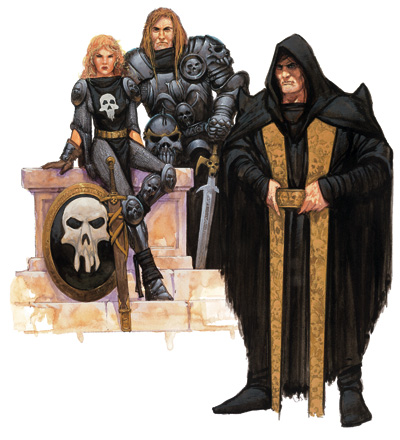

奈卡拉骑士

奈卡拉骑士：
这些骑士曾被称为“塔克西斯骑士”或“黑暗骑士”，因为他们曾经服务于黑暗女王，并献身于她的愿景。每一名奈卡拉骑士都要立下血誓，努力实现那个建立“新世界秩序”的愿景。他们的荣誉与纪律都由严厉甚至可以说苛刻的守则所规范着。
当混沌之战在克莱恩爆发后，群龙无首的的骑士团陷入了无序状态。更糟糕的是，塔克西斯连同她带给骑士团的愿景也仿佛从世界上消失了。惨烈的混沌之战平息后，骑士团在奈卡拉附近重建。在第五纪元之初，一些有施法能力的掌权骑士（同骑士团高层合谋）开始通过秘仪力量伪造骑士团愿景的遗迹，一度稳固了骑士团成员对黑暗女王再度回归的信念。
在Sir Morhan Targonne继任骑士团的领袖，宣布放弃从前的愿景，并将骑士团更名为奈卡拉骑士团之后，一切都彻底改变了。目前，骑士们正在努力把骑士团建设成一个完全独立于他们那已在灵魂之战中毁灭的女神的新式团体。他们并没有去寻找新的守护神，而是开始把秘仪力量和术士法术作为自己的魔法之源。
（有关以上事件更完整的记述请见第六章：克莱恩的年表。）
同索兰尼亚骑士类似，黑暗骑士也分为几个相对独立的团体。不同的是，在奈卡拉骑士团中，每一个团体都享有同等的地位。所有的奈卡拉骑士都会被训练成武者：百合骑士擅长格斗；骷髅骑士可以靠神术辅助作战；而棘刺骑士则掌握着强大的奥术力量。
冒险：从塔克西斯的愿景中解放后，如今的奈卡拉骑士仍然坚守着他们的血誓与守则，即使是在改建为新团体后亦是如此。因此，只要组织需要，他们会在任何时候展开冒险。
特质：奈卡拉骑士的献身与专一的精神来自于他们用恐惧灌输的铁的纪律感。他们用军人的专注精神和狂热者的牺牲精神不懈地追寻着骑士团的目标。但在执行命令的过程中，他们对行动方式的选择却十分自由。只要不违背骑士精神或是违反被交待的特殊规定，骑士们可以自行选择如何去完成任务。
与索兰尼亚骑士不同，奈卡拉骑士可以说谎、偷盗、甚至谋杀，但只能在不由自主的情况下，而且不能为一己之私。虽然，其实团的守则邪恶而严酷，但并不残忍。黑暗骑士不会无故将痛苦施加于他人，或是做出残忍的行径。那些屈服的人会被骑士们以礼相待，除了能够允许获得自由。
阵营：奈卡拉骑士团的阵营必须是守序邪恶，那些改变阵营的奈卡拉骑士一旦被发现，会被立刻除名。黑暗骑士的邪恶与法律的概念在其守则中都有着明确的定义。
宗教：在塔克西斯毁灭前，那些黑暗骑士--她的信徒--已经学会了利用秘仪力量和术士法术来增强自己的魔法。如今，虽然黑暗女王已经成为了历史，但骑士团并没有并没有宣誓效忠一个神祗作为他们新的守护神。
不过，这并不意味着他们不再敬仰任何神祗了。他们尊奉沙苟纳斯作为他们的战神，尊奉赛波音为骑士团创始者艾瑞阿肯大君之母。在灵魂之战中，许多骑士开始向一个无名的“神祗”寻求指引。但在战后，意识到自己被出卖了的骑士们背弃了对任何神祗的信仰。
背景：百合骑士被招募入团时往往都还是青少年。无论这些年轻人是被从家乡引诱来的还是在流亡过程中被收留的，都要接受骑士团的战斗训练。
骷髅骑士大都是那些曾经作为塔克西斯牧师，献身于邪恶事业的人。在凡人之年代早期，骷髅骑士开始通过研习秘仪力量以维持他们的法力。（虽然秘仪力量中很少有属于守序领域的部分，但骷髅骑士乃至整个奈卡拉骑士却都保持着守序邪恶的阵营。）
棘刺骑士往往都来自于法师叛徒和那些想寻求高级法术的强大力量，却又不愿受制于高阶法师议会的黑袍法师。在凡人之年代早期，棘刺骑士开始通过研习术士法术以维持他们的力量。（同所有奈卡拉骑士一样，棘刺其实也属于守序邪恶阵营，即使只有很少一部分术士法术属于守序阵营。）
种族：黑暗骑士几乎允许任何种族加入骑士团，包括黯精灵和矮人孤儿。但坎德人和侏儒并不受欢迎。同样不受欢迎的还有那些被认为对骑士团毫无价值的类人生物--龙人。
同其他职业的关系：因为训练有素的黑暗骑士之间往往能够合作得相当好，所以他们常常会成为一支混编部队中最具影响力的一部分。作为一个十分虔诚的团体，他们对邪恶阵营的牧师十分尊敬。但他们并不信赖高阶法师议会的法师。作为灰袍法师的棘刺骑士甚至会视黑袍为其敌手。
前奈卡拉骑士：那些背弃其守序邪恶阵营或明显违反守则行事的骑士一旦被发现，便会立刻受到严惩（往往会被判死刑）。
如果一名奈卡拉骑士被剥夺了头衔和权力，那么他在骑士团的任何一个团体中都无法继续升级。
边框：塔克西斯之试炼：
当骑士团还是以塔克西斯命名的时候，骑士们必须通过一项危险的试炼以示其对女王之愿景的忠诚。现在，名字虽已改为奈卡拉骑士团，但骑士团仍然保持着试炼的传统--去考验侍从是否会忠实献身骑士团，而不再是针对那个已故神祗的愿景。尽管意义已经完全改变，但一些人人就把这项试炼称作“塔克西斯之试炼”。
三个骑士团体中的高阶骑士届时都将出席试炼现场。试炼的内容通常集中在三个题目上，愿景、秩序和服从。这个试炼和大法师之塔中的试炼一样困难。通常会遭遇到的问题是：骑士愿意牺牲一切，权力、财富、爱人甚至是生命来成全愿景吗？秩序和服从能够压抑过情感吗？骑士愿意为了服从命令而牺牲至亲或是爱人的性命吗？
极少数情况下，骑士会被要求在一项重要考验上在同地持续幻象试炼，尽管这些试炼的内容不可避免的是大同小异的。
在试炼中失败，就意味着死亡。但一旦骑士通过试炼，便会被带至一座黑暗神庙，他将会独自在神庙中祈祷、禁食四天，直到骷髅骑士最终提名他为一位新的奈卡拉骑士，他才正式加入骑士团。
血誓：
血誓则很简短：“致力愿景，否则死”。每个骑士在加入骑士团之后，都必须全心全意地为骑士团服务，所有有关自我的念头都必须放到第二位。但是，这并不表示骑士们就没有自我思考的资格和权力，这就是创立守则的原因。
守则：
奈卡拉骑士团的守则就是建立在索兰尼亚骑士团的硬性标准基础上的一套法典。内容虽然严格，但也不是没有例外与回旋的余地的。建立法则的根本目的是管理军队，但华丽的词藻使其融入了黑暗骑士的日常生活中。根据守则，高阶骑士可以通过事件的性质进行公平而正确的审判。
百合骑士
百合骑士：
“独立带来混乱。舍弃自我，坚定信心。”
同索兰尼亚骑士团中的皇冠骑士相类似，百合骑士是奈卡拉骑士中的武者团体。他们最基本的信条就是服从命令，行动一致才能获得力量；思想开放，各行其是只能导致混乱。
百合骑士的任务就是通过武力征服世界。在混沌之战后的第一年，还有一些骑士人在为塔克西斯而战斗，并对她的回归坚信不疑。如今，那些仍然信仰黑暗女王的骑士在数量上已经十分稀少了，绝大部分的百合骑士都已经放弃了那个愿景。
生命骰数：d10
职业需求：要想成为一名合格的百合骑士，一个角色必须符合以下所有标准：
阵营：守序邪恶
基础攻击加值：+5
技能：知识（宗教） 2级，威吓 4级。
专长：荣誉羁绊。
特殊：百合骑士侍从：一个希望成为百合骑士的骑士候选人需要一个监护人（至少3级的百合骑士）。一旦被其认可，候选人便成为了一名百合骑士侍从。 随意地，地下城主也可以允许玩家以侍从身份开始一次战役。
塔克西斯的试炼：在考察时期，侍从角色一旦升了一级（在任意职业上)并且满足了成为百合骑士的一切要求，该角色便可以申请接受塔克西斯的试炼（见边框）。如果申请者通过试炼，便可以作为百合骑士正式加入骑士团。
本职技能：百合骑士的本职技能如下（括号中为该技能的关键属性）：“攀爬”（力量），“手艺”（智力），“交涉”（魅力），“威吓”（魅力），“跳跃”（力量），“知识”（宗教）（智力），“专业”（感知）和“骑术”（敏捷）。
升级可得到的技能点数：2+智力调整值
职业特性：以下为百合骑士的所有职业特性：
擅长武器和防具：百合骑士擅长使用所有简易武器，军用武器，任何类型的盔甲与盾牌（除塔盾外）。
偷袭（Sneak Attack）：百合骑士能够抓住机会，趁目标无法有效防卫是攻击其弱点，造成额外伤害值。基本上，只要目标无法应用防御等级的敏捷加值（无论到底有没有敏捷价值），或是百合骑士得到夹击目标的机会时，其攻击便可造成额外伤害值。1级百合骑士的额外伤害值是1d6，尔后百合骑士等级每升三级再加1d6。偷袭造成的额外伤害不计入重击的伤害倍数。
远程攻击的目标必须位于30英尺内，才可视为偷袭。因为超过此距离，便很难精确的瞄准。
百合骑士使用闷棍（覆皮的短棍）或徒手击打进行偷袭时，可选择造成淤伤而非一般伤害。但使用一般武器偷袭不能造成淤伤（连采用-4减值的一般方法都不能用），因为偷袭时百合骑士必须发挥武器的最大效用。
构装生物、泥形怪物、植物、不死生物、虚体生物，以及不受重击的生物，都不会被百合骑士偷袭。百合骑士必须能清楚看到目标，而且可以击中要害，所以他无法偷袭隐蔽的生物，也无法偷袭碰不到要害的目标。
如果百合骑士有来自其它原因的偷袭加值（比如游荡者等级），其额外伤害加值也会累加其中。
动摇军心（特异能力）（Demoralize）：2级开始，百合骑士的威吓技能等级将得到+2的亵渎加值，使其能够在战争中更有效地动摇敌人的斗志。如果检定成功，目标则会进入颤栗状态。此效果持续的时间为百合骑士等级乘以1轮。
死亡抗争（特异能力）（Fight to the Death）：3级开始，百合骑士会自动得到死硬专长，即使在没有达到获此专长的先决条件的情况下。
不灭意志（超自然能力）（Unbreakable Will）：4级开始，百合骑士对于信念的虔诚精神使他们对恐惧效果完全免疫。此外，他们还可以在所有豁免检定上获得+2的士气加值，这个加值在8级时会升为+4。
灵活装甲（特异能力）（Aromored Mobility）：6级开始，百合骑士无论在进行包括高速奔跑任何行动时，都可以视重型盔甲为中型盔甲。此外，当装备重型盔甲时，他们的防具检定减值也会-1。这个减值降低的特性同样适用于精制和dragonmetal盔甲。
万众一心（超自然能力）（One Thought）：到了10级，百合骑士集体行动的一致性可以说天衣无缝。如果周围100英尺有其他没有被突袭或陷入措手不及状态的任何等级的百合骑士在场，那么这名百合骑士同样不会被突袭或陷入措手不及状态。，而且除非周围100英尺内的百合骑士也遭到夹击，否则这名百合骑士也不会受到夹击。此效果只在 10级的百合骑士身上起作用，对他附近的其他等级的百合骑士并没有影响。
表２－８：百合骑士
职业 基础攻击 强韧 反射 意志
等级 加值 豁免 豁免 豁免 特殊
１ ＋１ ＋２ ＋０ ＋０ 偷袭＋１ｄ６
２ ＋２ ＋３ ＋０ ＋０ 动摇军心
３ ＋３ ＋３ ＋１ ＋１ 死亡抗争
４ ＋４ ＋４ ＋１ ＋１ 偷袭＋２ｄ６，不灭意志（＋２加值）
５ ＋５ ＋４ ＋１ ＋１
６ ＋６ ＋５ ＋２ ＋２ 灵活装甲
７ ＋７ ＋５ ＋２ ＋２ 偷袭＋３ｄ６
８ ＋８ ＋６ ＋２ ＋２ 不灭意志（＋４加值）
９ ＋９ ＋６ ＋３ ＋３
１０ ＋１０ ＋７ ＋３ ＋３ 万众一心，偷袭＋４ｄ６
骷髅骑士
骷髅骑士：
“死神是耐心的。它可能由内而发，也可能由外而攻。对一切要小心警醒，抱持批判态度。”
相比于代表体魄的百合骑士团与代表心智的棘刺骑士团，靠力量与神术走进战场的骷髅骑士团代表着黑暗女王的精神。骷髅骑士在执行任务时既能够做到粗暴残忍，又可以做到细致入微；他们既能够用神术打击敌人，又可以通过诱惑，谋略，和交涉技能达到目标。
骷髅骑士经常被安排到外来势力中出任大使或参谋，因为这些任务能够充分发挥他们天才般的设计阴谋的能力优势。而且这种能力还可以加强他们的神术力量。当骑士团进行军事部署时，骷髅骑士扮演着密探的角色，密切监视着每一名黑暗骑士的一举一动，并向上级汇报他们在其中发现的所有违反骑士守则的事件。
在混沌之战以前，骷髅骑士多少可以算作黑暗女王的特殊牧师。但在战后，他们中的大部分开始转而寻求秘仪力量，只有一少部分仍对他们女王的回归坚信不疑。如同百合骑士的情况，骷髅骑士也放弃他们的前守护神很久很久了。
生命骰数：d8
职业需求：要想成为一名合格的骷髅骑士，一个角色必须符合以下所有标准：
阵营：守序邪恶
基础攻击加值：+3
技能：知识（宗教） 4级。
专长：警觉。
特殊：能够施展3级神术。
百合骑士侍从：一个希望成为骷髅骑士的骑士候选人需要一个监护人（至少3级的骷髅骑士）。一旦被其认可，候选人便成为了一名百合骑士侍从（即使他最终希望的是成为一名骷髅骑士）。随意地，地下城主也可以允许玩家以侍从身份开始一次战役。
塔克西斯的试炼：在考察时期，侍从角色一旦升了一级（在任意职业上)并且满足了成为骷髅骑士的一切要求，该角色便可以申请接受塔克西斯的试炼（见边框）。如果申请者通过试炼，便可以作为骷髅骑士正式加入骑士团。
本职技能：骷髅骑士的本职技能如下（括号中为该技能的关键属性）：“手艺”（智力），“交涉”（魅力），“威吓”（魅力），“知识”（宗教）（智力），“专业”（感知）和“骑术”（敏捷）。
升级可得到的技能点数：2+智力调整值
职业特性：以下为骷髅骑士的所有职业特性：
擅长武器和防具：骷髅骑士无法获得新的擅长武器和防具。
侦测善良（类法术能力）（Detect Good）：骷髅骑士可以随时随意侦测善良。此能力效果如同“侦测善良”法术。
破善斩（超自然能力）（Smite Good）：骷髅骑士可用普通近战攻击使出破善斩，每日一次。此时，攻击检定须加上魅力调整值（若为正值），且造成等于骷髅骑士等级的额外伤害值。如果骷髅骑士对非善良生物使用破善斩，则没有特殊效用，而且仍计入当日使用次数。破善斩是超自然能力。
到了5级和10级时，骷髅骑士每天可以多使用一次破善斩，在10级时达到上限3次。
邪恶灵光（特异能力）（Arua of Day）：骷髅骑士邪恶灵光的强度（见侦测邪恶的法术说明）取决于骷髅骑士的等级与其牧师等级（如果有）之和。
暗黑祝福（超自然能力）（Dark Blessing）：2级开始，骷髅骑士的魅力调整值（若为正值），则加值可用于所有豁免检定上。
每日法术数量：2级开始，以及之后的每次升级，骷髅骑士的每日法术数量（以及其相应领域的可知法术量）都会增加，就像之前的施法职业一样。但不能获得之前施法职业等级的其它能力（如：增进摧毁或驱散不死生物的能力等）。若人物在成为骷髅骑士之前拥有多个神职职业，则必须选择要将此升级的骷髅骑士等级加在哪一种职业上，以决定新的每日法术数量。
辨知谎言（类法术能力）（Discern Lies）：3级的骷髅骑士可以将辨知谎言作为一项类法术能力使用，每日使用数量等同于他的感知调整值。
斥喝不死生物（超级然能力）（Rebuke Undead）：3级开始，骷髅骑士可以获得邪恶牧师拥有的斥喝不死生物的能力。他的有效牧师等级等于他的职业等级-2。如果该骑士同时兼有牧师等级，那么他可以将其骷髅等级-2后加到他的牧师等级中，以决定其超度能力。
暗黑恩惠（超自然能力）（Favor of Darkness）：到了10级，骷髅骑士已经可以作为邪恶的化身了。他们所持的任何近战武器都可以作为不洁武器以抵消善良阵营人物的伤害减免。此外，当攻击善良阵营人物时，这柄武器还将获得+1d6的不洁伤害加值。但只要骷髅骑士停止接触该武器，那么所有附加的特殊能力都会立刻消失。
表２－９：骷髅骑士
职业 基础攻击 强韧 反射 意志
等级 加值 豁免 豁免 豁免 特殊 每日法术数量
１ ＋０ ＋２ ＋０ ＋２ 侦测善良，破善斩（１次／日），邪恶灵光 －
２ ＋１ ＋３ ＋０ ＋３ 暗黑祝福 －
３ ＋２ ＋３ ＋１ ＋３ 辨知谎言，斥喝不死生物 现有职业等级＋１
４ ＋３ ＋４ ＋１ ＋４ 现有职业等级＋１
５ ＋３ ＋４ ＋１ ＋４ 破善斩（２次／日） 现有职业等级＋１
６ ＋４ ＋５ ＋２ ＋５ 现有职业等级＋１
７ ＋５ ＋５ ＋２ ＋５ 现有职业等级＋１
８ ＋６ ＋６ ＋２ ＋６ 现有职业等级＋１
９ ＋６ ＋６ ＋３ ＋６ 现有职业等级＋１
１０ ＋７ ＋７ ＋３ ＋７ 暗黑女王之恩惠，破善斩（３次／日） 现有职业等级＋１
棘刺骑士
棘刺骑士：
“随心所欲者将会发现自己全身破绽。心中只能存有胜利信念。”
棘刺骑士也被称作“灰袍骑士”，因为他们身着的都是尘土般颜色的灰袍，以表明他们并不服务于高阶法师议会。这些骑士不仅仅是掌握着毁灭性奥术的法师，同时也是预言师与占卜家，能够通过卦象合理地对骑士团的人事结构进行管理，对骑士团的长远规划进行设计。
棘刺骑士能够把那些看似无关的突发事件划为他们伟大计划的一部分。每当棘刺骑士巧妙地处理了类似事件后，他们都可以从中获得对天机的进一步认识。他们不必顾忌法师议会的禁令，可以随意使用那些禁制魔法，并借以增强他们的法力。
在混沌之战以前，棘刺骑士可以从塔克西斯那里获得破坏力极强的法力（属于她儿子努塔瑞的领域）。但在战后，大部分的棘刺骑士开始转而研究术士法术，只有少数骑士对他们女王的回归仍坚信不疑。同百合骑士与骷髅骑士的情况差不多，那些仍旧期待女王回归的棘刺骑士几乎已经消失殆尽了。
生命骰数：d6
职业需求：要想成为一名合格的棘刺骑士，一个角色必须符合以下所有标准：
阵营：守序邪恶
基础攻击加值：+3
基础豁免检定加值：强韧+4 意志+3
技能：知识（神秘） 4级，知识（宗教）4级，辨识法术 8级。
专长：任意一种超魔专长，擅长盔甲：重型，擅长军用武器（所有）。
特殊：能够施展3级奥术。
百合骑士侍从：一个希望成为棘刺骑士的骑士候选人需要一个监护人（至少3级的棘刺骑士）。一旦被其认可，候选人便成为了一名百合骑士侍从（即使他最终希望的是成为一名棘刺骑士）。随意地，地下城主也可以允许玩家以侍从身份开始一次战役。
塔克西斯的试炼：在考察时期，侍从角色一旦升了一级（在任意职业上)并且满足了成为棘刺骑士的一切要求，该角色便可以申请接受塔克西斯的试炼（见边框）。如果申请者通过试炼，便可以作为棘刺骑士正式加入骑士团。
本职技能：棘刺骑士的本职技能如下（括号中为该技能的关键属性）：“专注”（体质），“手艺”（智力），“交涉”（魅力），“威吓”（魅力），“知识”（包括所有种类的知识，但需分开选择）（智力），“专业”（感知），“骑术”（敏捷）和“法术辨识”（智力）。
升级可得到的技能点数：2+智力调整值
职业特性：以下为棘刺骑士的所有职业特性：
擅长武器和防具：棘刺骑士无法获得新的擅长武器和防具。
每日法术数量：棘刺骑士每升一级，每日法术数量（以及其相应领域的可知法术量）都会增加，就像之前的施法职业一样。但不能获得之前施法职业等级的其它能力。若人物在成为棘刺骑士之前拥有多个奥术职业，则必须选择要将此升级的棘刺骑士等级加在哪一种职业上，以决定新的每日法术数量。
预言师（特异能力）（Diviner）：棘刺骑士研习的重点就是预言能力，他们相信对安赛隆的过去、现在和将来有着正确的认识是实现目标的必要条件。棘刺骑士在施展预言系法术时，可以视其施法者等级比实际等级高一级。
如果棘刺骑士同是也是一名法师或术士，那么他还将获得作为专精预言师的奖励--每天可以多准备每个法术等级的一个额外预言系法术，对预言系法术进行“辨识法术”检定以学习该法术时，具有+2加值，而且无须放弃对预言系禁制学派的法术的学习。
预知先兆（Read Omens）：棘刺骑士擅长求教于事物的征兆，以及看透隐藏在事物暗面的真实意义。他们可以施展2级奥术“卜筮”。这个法术会自动加到他的法术书或已知法术中去。（如果角色是术士职业，此法术的不会计入其该等级的可知法术总量。）
装甲施法（特异能力）（Armored Spellcasting）：在装备盔甲时，棘刺骑士可以比其他角色更有效地施展奥术。2级开始，骑士装备任何类型的盔甲时，其奥术失效几率都会-5%。5级开始，其奥术失效几率会-10%；8级开始，会-20%。
恐怖暗气（超自然能力）（Aura of Terror）：3级开始，棘刺骑士将被一层明显的恐怖暗气所笼罩，其周围的任何生物，甚至包括其他奈卡拉骑士，都会感到不安或恐惧。任何距离棘刺骑士 10英尺内的生物都要通过一次意志豁免检定（难度等级为10+棘刺骑士等级+其魅力调整值），否则陷入颤栗状态。通过检定的生物将在一天之内对恐怖暗气的效果免疫。
武器之触（超自然能力）（Weapon Touch）：4级开始，棘刺骑士可以通过近战攻击触发有效距离为接触的法术。通过这种方式触发法术只需一次普通的近战攻击，而无需真正接触对方。如果攻击成功，则骑士除进行正常的伤害投掷外，还要加上法术效果；如果攻击失败法术则被浪费（除非法术本身允许施法者进行多次尝试）。作为正常的接触类魔法，棘刺骑士可以在同一轮内进行攻击并施法。不过，这样做需要一整轮的行动时间，因此，骑士在攻击与施法之间不得移动超过5英尺的距离。
预知恶兆（Read Portents）：6级开始，棘刺骑士的法术列表中会增加一个新的4级法术“预言术”。这个法术会自动加到他的法术书或已知法术中去。（如果角色是术士职业，此法术的不会计入其该等级的可知法术总量。）
通晓天机（类法术能力）（Cosmic Understanding）：到了10级，棘刺骑士的法术列表中会增加一个新的5级法术“通神术”。这个法术会自动加到他的法术书或已知法术中去。（如果角色是术士职业，此法术的不会计入其该等级的可知法术总量。）
此外，每天一次，棘刺骑士还可以要求将一个等同于其法师或术士施法者等级的洞察加值加到他的某次攻击检定、属性检定、技能检定、豁免检定或是针对某次攻击时的防御等级中去（即使是在措手不及的状态下）。除骑士在任何情况下都可以提出要求的特性外，此能力效果同法术“片刻预知”相同（但每天不能使用超过一次）。
表２－１０：棘刺骑士
职业 基础攻击 强韧 反射 意志
等级 加值 豁免 豁免 豁免 特殊 每日法术／已知法术数量
１ ＋０ ＋０ ＋０ ＋２ 预言师，预知先兆 现有职业等级＋１
２ ＋１ ＋０ ＋０ ＋３ 装甲施法（－５％） 现有职业等级＋１
３ ＋２ ＋１ ＋１ ＋３ 恐怖暗气 现有职业等级＋１
４ ＋３ ＋１ ＋１ ＋４ 武器之触 现有职业等级＋１
５ ＋３ ＋１ ＋１ ＋４ 装甲施法（－１０％） 现有职业等级＋１
６ ＋４ ＋２ ＋２ ＋５ 预知恶兆 现有职业等级＋１
７ ＋５ ＋２ ＋２ ＋５ 现有职业等级＋１
８ ＋６ ＋２ ＋２ ＋６ 装甲施法（－２０％） 现有职业等级＋１
９ ＋６ ＋３ ＋３ ＋６ 现有职业等级＋１
１０ ＋７ ＋３ ＋３ ＋７ 通晓天机 现有职业等级＋１ |